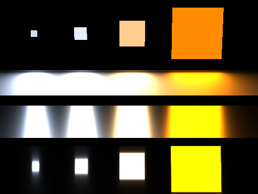

Rayster
Vulkan based hybrid raytracer, 2019 - Prresent
Fun In Flatland
A Python based 2D visulization and raytracing API, 2019-present
Rigid body simulation on GPU
A class project for course Computer Animation course, Winter 2017
A pathtracer
A class project for Realistic Image Synthesis course, Fall 2016

Abstract
[Code]